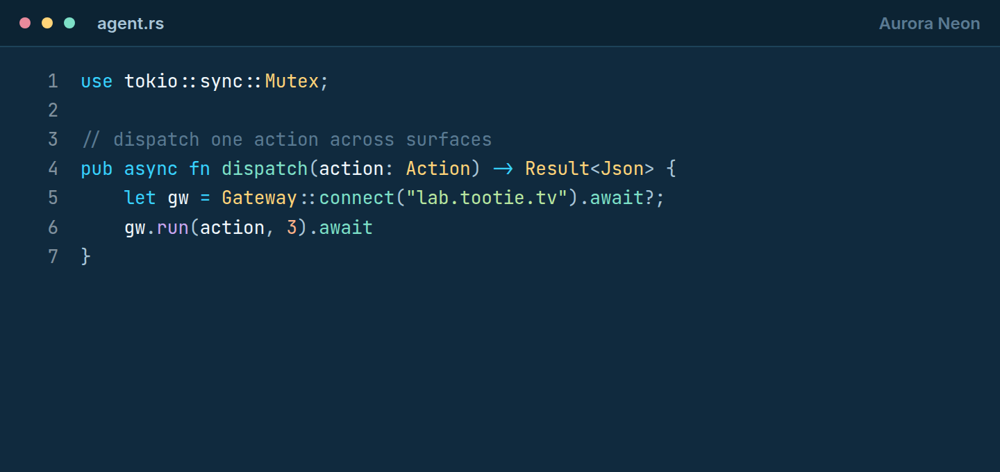
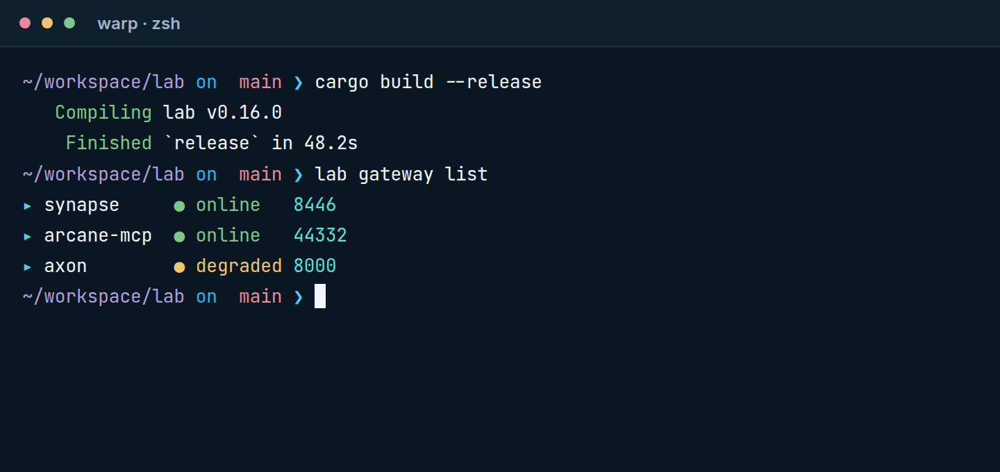
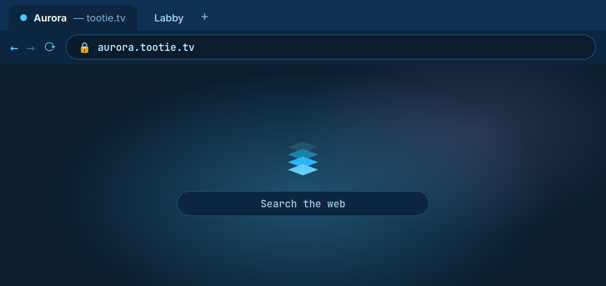
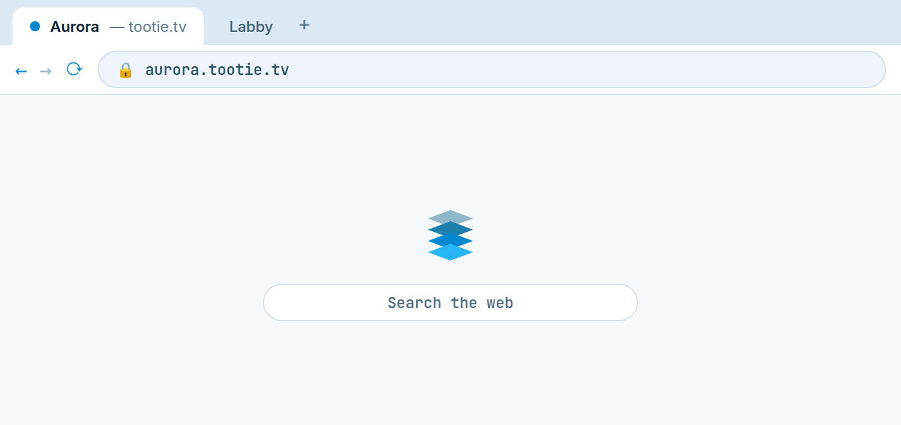
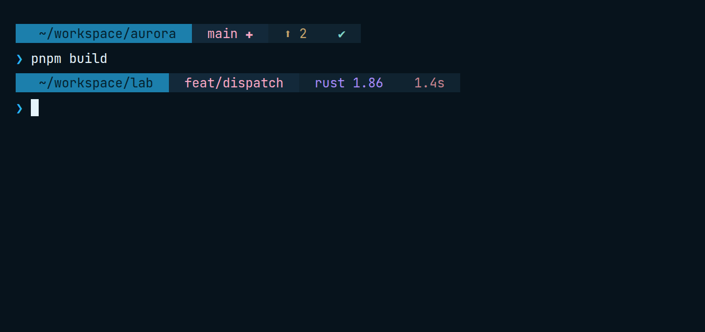
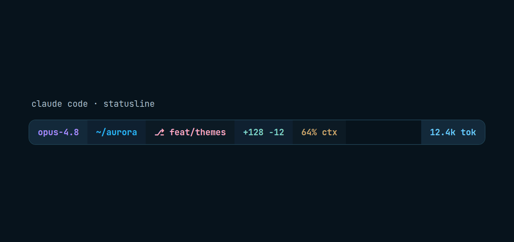
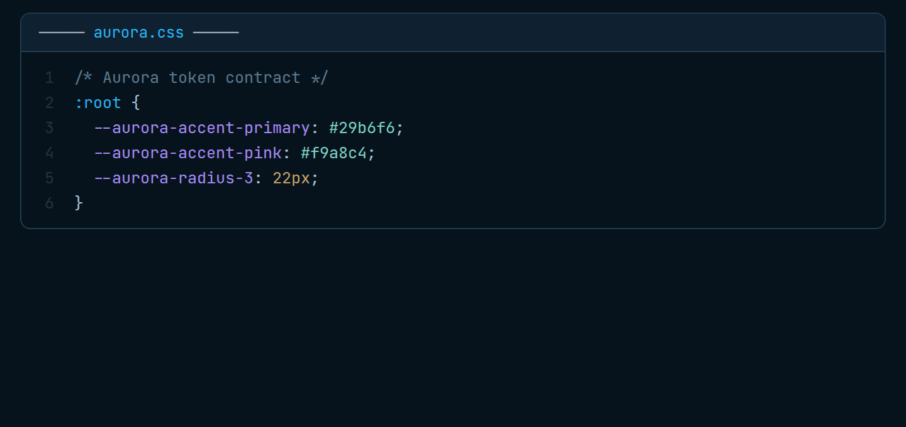
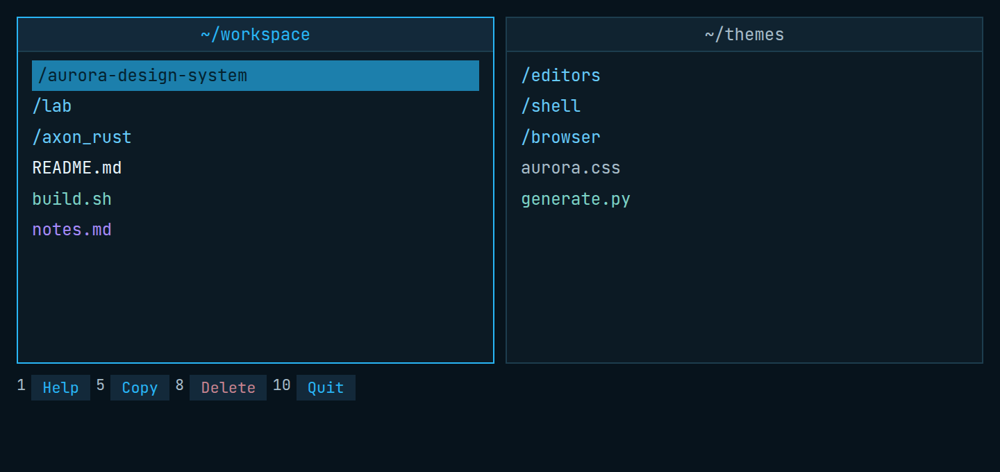
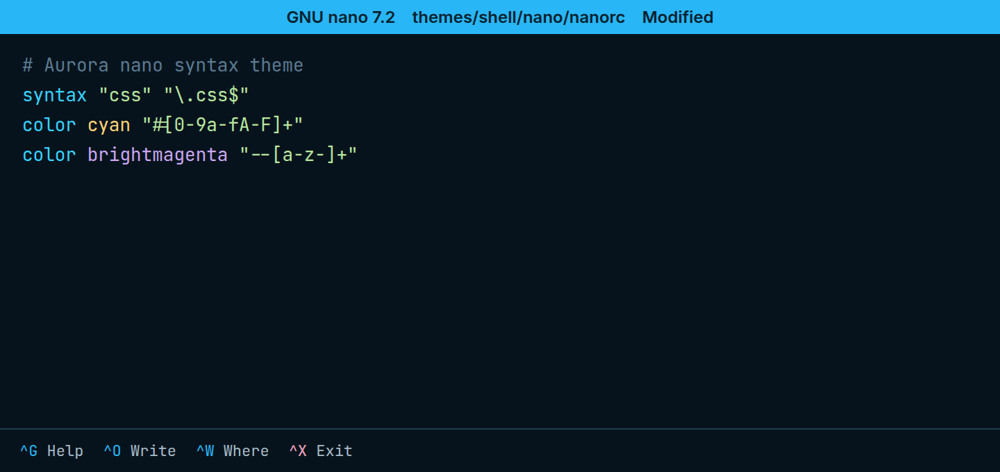

Aurora is an operator-grade, dark-first design system for agent products — a shadcn component registry, cross-platform tokens, and matching themes for the editors, terminals, and tools you live in.
128 registry items — 64 UI primitives plus composed AI, workspace, files, auth, and feedback blocks. Install one with the shadcn CLI.
The same palette, hand-ported to your editor, terminal, browser, and shell — Zed, Warp, Claude Code, Chrome, and six shell tools.
One source of truth in CSS custom properties, exported to Android via Style Dictionary. Dark-first, with a verified light mode.
Not just the app — the navy base, cyan primary, rose secondary, and violet AI accents reach every tool. Pick a surface and install in one line.
Each theme hand-ports the canonical Aurora palette into a tool's native format. Source lives in themes/; served copies install straight from aurora.tootie.tv.



A code-less Chrome theme on the pop palette: lifted navy chrome, vivid cyan, and an Aurora glow new-tab page.
curl -O aurora.tootie.tv/chrome/aurora.zip
The light counterpart — cyan-tinted chrome on a clean Aurora light surface for bright environments.
curl -O aurora.tootie.tv/chrome/aurora-light.zip




Swatch strips show each theme's real anchor colors (background, primary, accents) pulled from its palette — in the live site these become actual screenshots/renders.